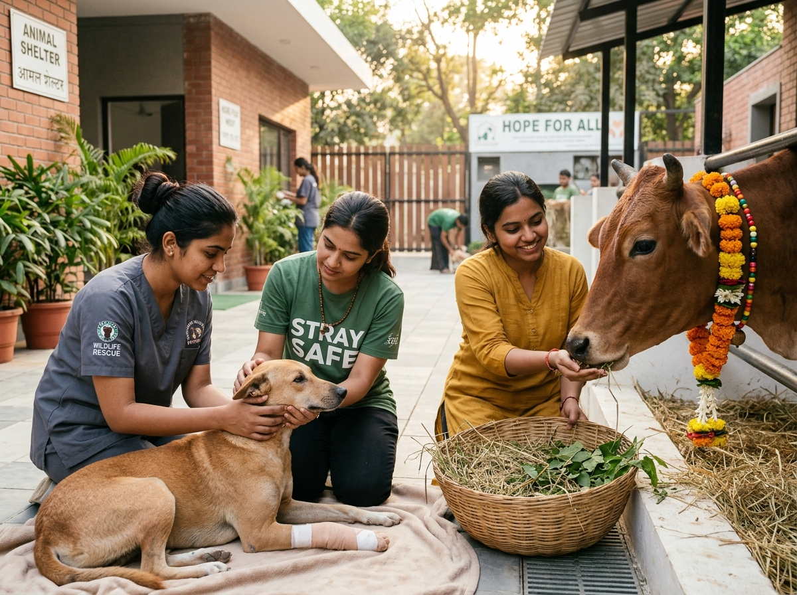

Animal Welfare & RescueAnimal Protection & Care
Compassion in Action for the Voiceless
- 🐾 24/7 emergency rescue patrol for wounded street animals and wildlife.
- 💉 Mass anti-rabies vaccination and ABC sterilization assistance.
- 🥣 Community feeding stations, clean water basins, and reflective collars.
- ⚖️ Rigorous anti-cruelty legal escalation under PCA Act, 1960.